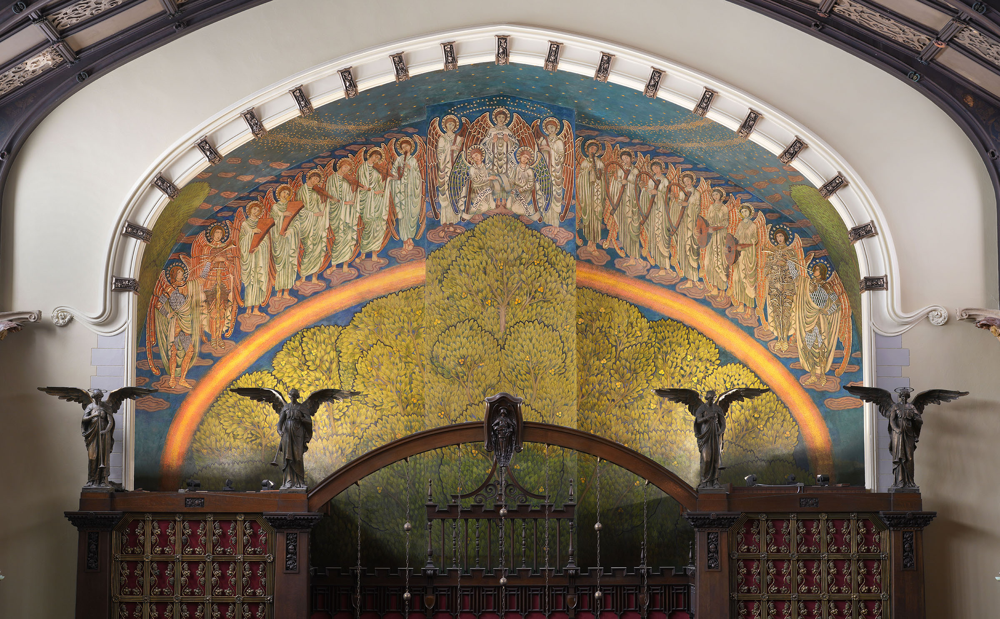

In March 2006, a small group of volunteers founded an organization with a mission to restore the Arts & Crafts sanctuary of Second Presbyterian Church of Chicago (1936 S. Michigan Avenue), Chicago's only individually listed National Historic Landmark church. On March 21, 2026, a capacity crowd gathered to celebrate that group, Friends of Historic Second Church (Friends), and its many accomplishments over those twenty years. These accomplishments are notable, and in 2025, Friends was awarded the Richard H. Driehaus Foundation Preservation Award for Stewardship by Landmarks Illinois for its ongoing work.

It was a beautiful spring day, with sunshine pouring through the twenty stained-glass windows, some fully restored and some in desperate need of attention. It was a perfect day for a celebration. There was a buzz in the air as the Thaddeus Tukes Duo started things off with a set on the vibraphone and piano. An organ fanfare by Michael Shawgo, church music director, called attendees to their seats. Remarks were given by Friends' President, Nate Lielasus, and Executive Director Andy Pierce. Bonnie McDonald, President and CEO of Landmarks Illinois, spoke about the importance of historic preservation and the work of Friends. Bill Tyre, Executive Director and Curator of Glessner House, summarized the twenty years of preservation work, including the restoration of four monumental Tiffany stained-glass windows, the massive Tree of Life mural and six smaller murals by Frederic Clay Bartlett, the replacement of the 1901 electrical wiring and restoration of all the light fixtures, as well as plaster repair and painting. In all, Friends has invested more than $4 million in restoration work.

Friends thanked its visionary lead donors: Barbi and Tom Donnelley, Richard H. Driehaus, the Richard H. Driehaus Foundation, William Hinchliff, and Marshall Field V.
Friends' founding board member Ann Belletire invited everyone in attendance to join in the 20th anniversary campaign, "Securing the Future, Preserving the Past." The campaign seeks support for the conservation of the remaining Bartlett murals and for the annual fund to ensure the future of the organization.

A reception followed with a second set by the Tukes Duo, a champagne toast, and conversation over passed appetizers.


Friends continues its 20th Anniversary celebration with free tours every weekend and programs throughout the year. Programs include:
• Cocktails with Tiffany, an Arts & Crafts Flower Show
• Arts & Crafts Jewelry and Metalwork, 1890–1940, with viewing of the newly restored Tiffany Jeweled window after its reinstallation
• A South Michigan Avenue free community Block Fest
• A Basement to Belfry Tour



For details, please visit the Friends of Historic Second Church website at historicsecondchurch.org